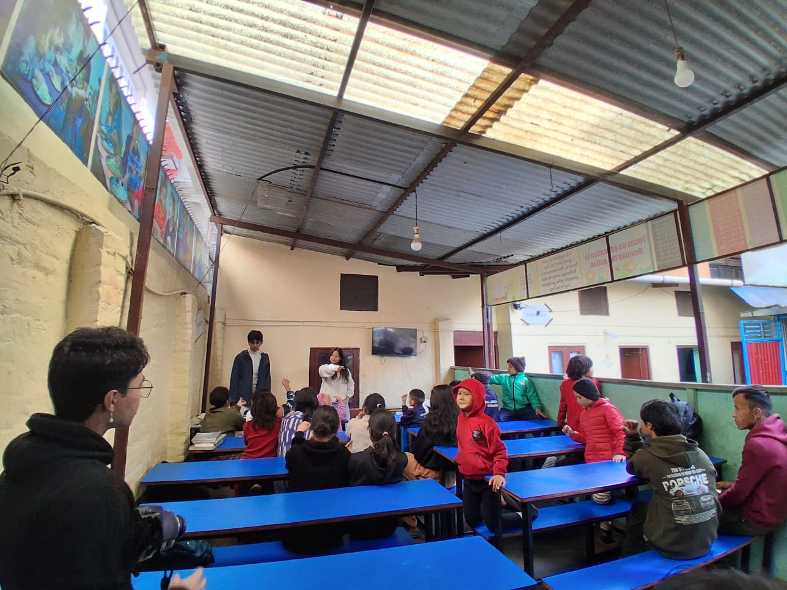

Session 01 / February 7, 2026
Leo Club at Clinton School
A documented visit with Leo Club at Clinton School in February 2026.

On February 7, 2026, See The Voices visited Clinton School with Leo Club. This page records the visit name and date supplied with the photographs.
The archive includes photographs from the visit. More session notes can be added here as the team publishes the accompanying reflections.